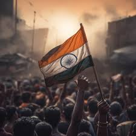

74th Independence day celebration

On the occasion of the 74th Independence Day, an event was conducted at an orphanage and old age home to spread joy and positivity. Special meals were sponsored for the residents, bringing smiles to the faces of the children and elderly. Volunteers actively engaged with the children, organizing activities to keep them entertained and uplift their spirits. The event was particularly meaningful as it provided much-needed interaction and excitement for the children, who had been feeling low due to the prolonged school shutdown and lack of visitors.